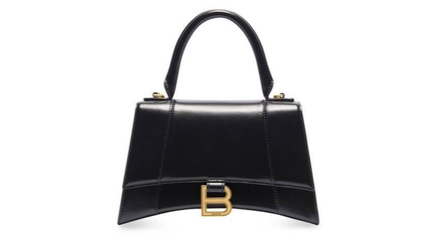

SIGNATURE BAGS
Balenciaga signature bags include the Hourglass, Le Cagole, Neo Classic, and Ville styles, updated regularly with new configurations and modifications.
ICONIC SHOES
“A collaboration between Balenciaga and Adidas recontextualizes elements of sportswear that have been a part of Balenciaga’s creative language,” Balenciaga said about its collab with Adidas.
ACCESSORIES
Looking for a Balenciaga City? We've got you. Explore our wide collection of Balenciaga accessories online and in store now.